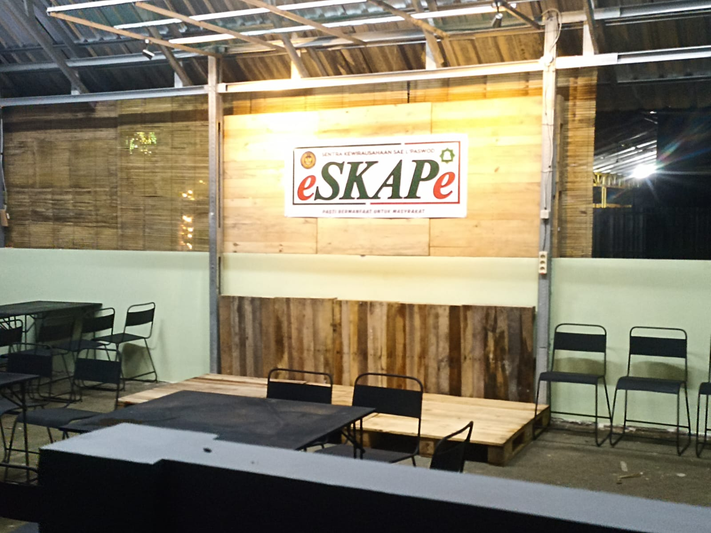
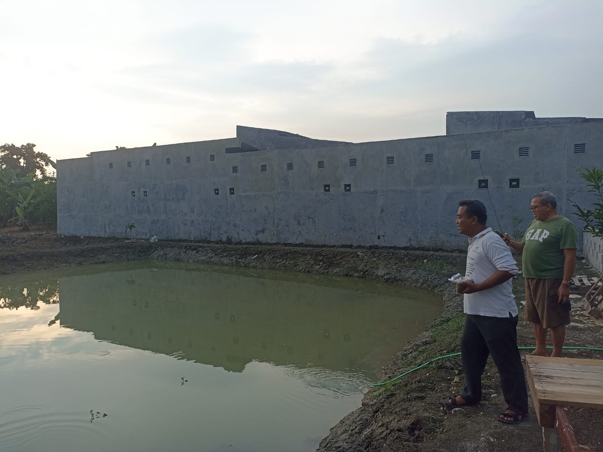
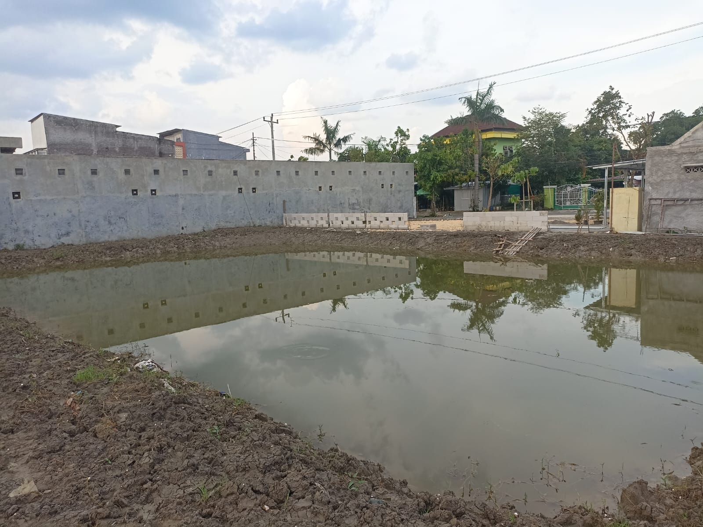

e
SKAPe
Beranda
Program
Beranda
Program
Sentra
Kewirausahaan
Sarana Asimilasi Edukasi
Program
Unggulan
P4GN
Rehabilitas Sosisal Korban Penyalahgunaan NAPZA
Konsultasi Adiksi NAPZA
Sekolah Tani (Pelatihan, Praktek, Magang)
Budidaya Tanaman Pangan (Padi)
Bercocok Tanam Hortikultura (Sayuran)
Pembenihan Ikan Tawar (Nila)
Budidaya Ikan Tawar (Nila dan Lele)
Pelayanan Informasi Edukasi NAPZA
Ketahanan Pangan
Business Center e'SKAPe'L'PASWOD


Pembenihan Ikan Tawar (Nila)
Resto dan Kafe

Budidaya Ikan Tawar (Nila dan Lele)